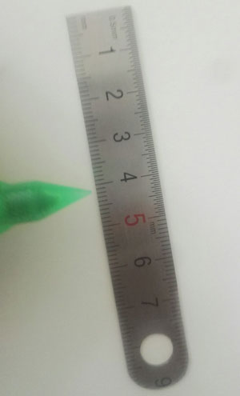

直尺刻度识别
直尺
尺子简介
尺子又称尺，是用来画线段(尤其是直的)、量度长度的工具。尺上通常有刻度以量度长度。有些尺子，在中间留有特殊形状如字母或圆形的洞，方便用者画图。材料编辑尺子通常以塑胶、铁、不锈钢、有机玻璃等制造的。
尺子的种类
“蛇仔尺”是专用来画曲线的尺。三角尺是直角三角形或等腰三角形的尺，方便画平行线或垂直线。
计算尺：一种计算工具。软尺：常用来量度人体部分。
拉尺：用来量度建筑物、家具等。
游标卡尺：用来量比较精小的东西。
在尺规作图中，尺被视为可画无穷长的直线的工具。
尺子的传说
鲁班的一种发明是能正确画出直角的三角板，也被称为班尺，它能告知工匠哪些尺寸是不规则的，以及根据占卜的规则(风水)哪些是不吉的。这些尺子在今天的买到。帛布尺，又称裁缝尺或裁尺，与班尺同源于律尺，但非历代相传承，年久已失其标准，成为另一尺度系统。
尺子的日常保护
尺子最忌讳的就是刻值的刮花和模糊，所以尺子成为文具里面最为被呵护的用品，平时使用尺子我们应该注意什么呢?1、首先是尺子的使用方法要正确，比如界划材料的时候最好不要使用塑料尺子，这样会很容易被刮花的。也有很多的人都会犯一个错，就是在画线的时候都会速度很快，然后会因为尺子的滑溜特点而会顺着尺子划过，这样就会弄花数值了，所以速度适中。2、尺子最好不要与小刀或金属文具混在一起放，与笔混在一起一定要套上笔盖。3、一定要防止暴晒和长期的日照，尤其塑料尺子的耐温性能不怎么样，会变形4、最好不要刷子清洗，意思就是尽量不要弄脏尺子。
尺子的生产制作
不同场合使用的尺子对其要求和标准不同，如果要求数值越精确的话，那么就需要较高的技术，而且必须借助机器生产制作，除了要求数值准确外，第二个重点就是刻数值的质量了，一般都会在刻数值后会再烙上一层保护膜的，第三点就是材料的选择，时下分为塑胶、金属、木质尺子，塑胶尺子主要是一般学生使用文具类，金属尺子则更多使用在工业上，而木制的尺子则主要用于教学。
怎样用刻度尺测量长度
会记
记录数字(包括准确值和估读值)和单位。
例如下图中准确值是2.7cm，估读值是0.08cm，则记录结果为2.78cm。如果被测物体的起始端没有对准零刻度线，一定要记得用终了端的值减去起始端的值才是物体的长度，初学物理的人这一点经常出错，一定要仔细看清楚看明白。如下右图所示，物体的长度是 9.80cm—6.00cm＝3.80cm。还要注意考场陷阱：“读一套，填一套” ，如下图右图 物体长度为0.0380 m。
物理中所有实验都要多次测量，一般来说多次测量分两种：一种是多次测量求平均值，减小误差(长度的测量就属于这种，求得平均值的结果和测得的数值的精确度一样，除不尽的采取四舍五入的方法)例如：某同学 5 次测量一块金属片的长度分别是：4.12cm、4.14cm、4.33cm、4.15cm、4.13cm，则物体的 长度应为-----m。 5 次测量结果中，4.33cm 与另外 4 个结果相差较大，视为测量错误，舍去。 将剩下的 4 个结果求出平均值为4.135cm,最后结果保留至估读位4.14cm： 注意事项：求得平均值后结果保留至估读位！ ！！；另一种是多次测量找规律。
怎么实现图像处理判读标尺刻度？
类似上图这种，我有大量的图片，用什么成熟的软件可以读取测量数据，或者需要什么公司进行研发，费用大概多少，对数据处理行业不了解，还靠各位知乎大神多指教。

我没有表述清楚，绿色的箭头是指针，想读取的是刻度读数，指针和标尺只是示意，可以换成更易被识别的款式，现在想请各位指导下，谢谢。
这类一般是很小众的应用，找到现成软件有点难。由于目标简单，现有技术应该可以完成。通过匹配算法，识别直尺和指针，再用直线检测算法，找到最小刻度，计算直尺起点与指针之间的刻度数量，即可读出数据。更新：我可不可以理解为，题主需要从图像中得到被指示的刻度数字？也就是4.15cm？
如果是这样的话，我觉得可以分为以下几个步骤来尝试处理：
1、固定尺子和指针的轮廓，比如尺子就是图上这种，普通的直尺，指针可以用铅笔状的，有两条平行线，头尖尖的那种，规定指针和直尺刻度的那一侧垂直放置；
2、通过直线检测确定尺子和指针的位置，由于1种的垂直关系，可以得到指针所在直线和尺子的交点坐标P；
3、字符检测，检测出尺子上的数字并识别，这样就可以知道每个数字的位置和数值啦；
4、找出距离P点最近的俩数字，然后·······我再想想后面怎么处理哈！
谢邀，同样没看懂题主想从图像里得到什么？
刻度尺识别项目_gy_Rick的博客，使用我之前的博客提到的EAST模型，对二值化的图片使用MSER算法，数字识别参考了开源项目digitx，完整代码见：github。
使用python opencv检测刻度线 - 码农俱乐部:Detecting tick marks with python opencv
- CN103559484B - 测量仪器刻度线的快速识别方法 - Google ...
Calculate Distance or Size of an Object in a photo image，单目测距
Microscope calibration overlays… What's the best approach? :显微镜的标定:相机坐标系转换为图像坐标系
sherloq：司法鉴定图片识别An open-source digital image forensic toolset
Find distance from camera to object using Python and OpenCV:单目测距
Accurate position measurement using low-cost cameras and OpenCV. :多目测距